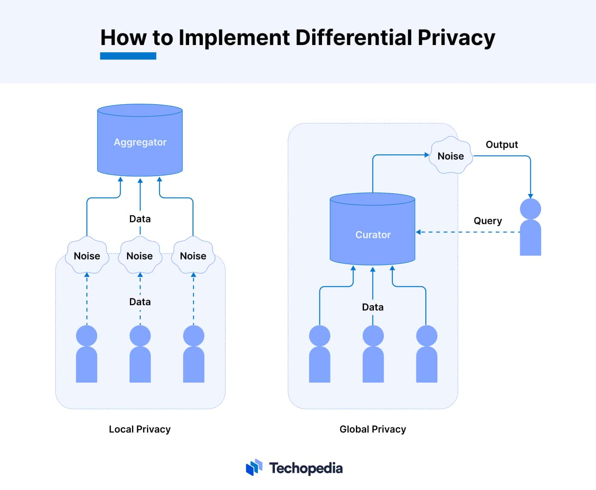

Introduction to Differential Privacy
Differential Privacy is a mathematical technique designed to ensure that the privacy of individuals in a
dataset is protected. It achieves this by adding noise to the data, making it impossible to identify any
single individual's information, even if the dataset is analyzed multiple times. Differential Privacy is
essential for financial institutions and other organizations that handle sensitive data, as it allows
them to analyze data trends without compromising individual privacy.
How Differential Privacy Works
- Data Collection: Data is collected from multiple sources, such as financial
transactions, customer demographics, or user behaviors.
- Adding Noise: Before analysis, a small amount of random noise is added to the data
points. This noise ensures that individual data points are obscured, making it impossible to
identify specific individuals.
- Data Analysis: Even with the noise added, meaningful trends and patterns can still
be identified, allowing organizations to gain insights from the data.
- Privacy Assurance: The amount of noise added is carefully calibrated to maintain
data accuracy while ensuring that individual data remains confidential.
Benefits of Differential Privacy in Financial Services
- Enhanced Data Privacy: Protects sensitive customer information by ensuring that
individual data points cannot be isolated, even during data analysis.
- Compliance with Regulations: Helps organizations comply with strict data privacy
regulations, such as GDPR and CCPA, by ensuring that data remains anonymized.
- Data Utility: Allows organizations to extract valuable insights from data without
compromising privacy, making it ideal for fraud detection, risk assessment, and customer behavior
analysis.
- Scalable and Flexible: Differential Privacy can be applied to various data types
and datasets, making it a versatile solution for privacy protection.
How Differential Privacy Works Diagram
The following diagram provides an overview of how Differential Privacy operates:

This diagram illustrates how noise is added to the data to protect individual privacy while still
allowing for meaningful data analysis.